Pony 対応 おすすめLoRA一覧
対応モデルごとに分類されたLoRA一覧です。各カテゴリーを選択してください。全 985 ファイル。
loras (1)
Flux (168)
Illustrious (196)
Pony (104)
SD1.5 (264)
SDXL (23)
Unknown (124)
WanVideo (106)
Pony (100 items on this page / Total 104 items)
.preview.jpg)
Pony
全般
1dkXLP (2)
「1dkXLP (2)」に特化した追加学習モデルです。Stable DiffusionでのAI画像生成にLoRAを導入し、特定要素の再現性を劇的に向上。効率的かつ高品質なビジュアルを求める全てのAI絵師必見のモデルです。
Size: 228,453,380 bytes

Pony
全般
1dkXLP
「1dkXLP」に特化した追加学習モデルです。Stable DiffusionでのAI画像生成にLoRAを導入し、特定要素の再現性を劇的に向上。効率的かつ高品質なビジュアルを求める全てのAI絵師必見のモデルです。
Size: 228,453,380 bytes
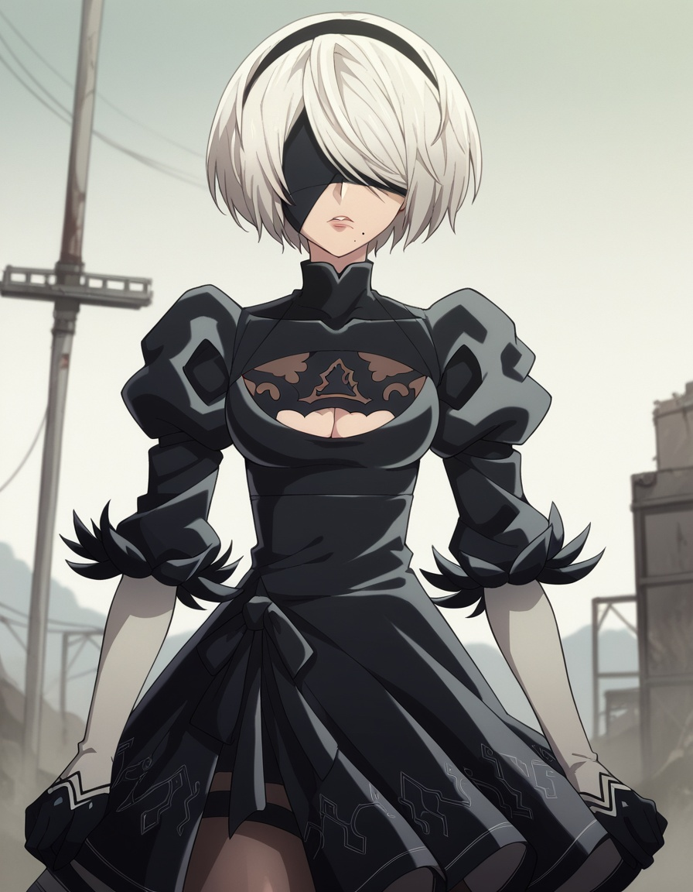
Pony
全般
2b-s1-ponyxl-lora-nochekaiser
「2b-s1-ponyxl-lora-nochekaiser」に特化した追加学習モデルです。Stable DiffusionでのAI画像生成にLoRAを導入し、特定要素の再現性を劇的に向上。効率的かつ高品質なビジュアルを求める全てのAI絵師必見のモデルです。
Size: 228,465,836 bytes
Pony
全般
7eleven_storefront_PONY_V1
「7eleven_storefront_PONY_V1」に特化した追加学習モデルです。Stable DiffusionでのAI画像生成にLoRAを導入し、特定要素の再現性を劇的に向上。効率的かつ高品質なビジュアルを求める全てのAI絵師必見のモデルです。
Size: 114,432,244 bytes
Pony
全般
Akatsuki_from_Kantai_Collection_PD
「Akatsuki_from_Kantai_Collection_PD」に特化した追加学習モデルです。Stable DiffusionでのAI画像生成にLoRAを導入し、特定要素の再現性を劇的に向上。効率的かつ高品質なビジュアルを求める全てのAI絵師必見のモデルです。
Size: 228,513,340 bytes
Pony
全般
alice-nikke-richy-v2_pdxl
「alice-nikke-richy-v2_pdxl」に特化した追加学習モデルです。Stable DiffusionでのAI画像生成にLoRAを導入し、特定要素の再現性を劇的に向上。効率的かつ高品質なビジュアルを求める全てのAI絵師必見のモデルです。
Size: 57,468,108 bytes
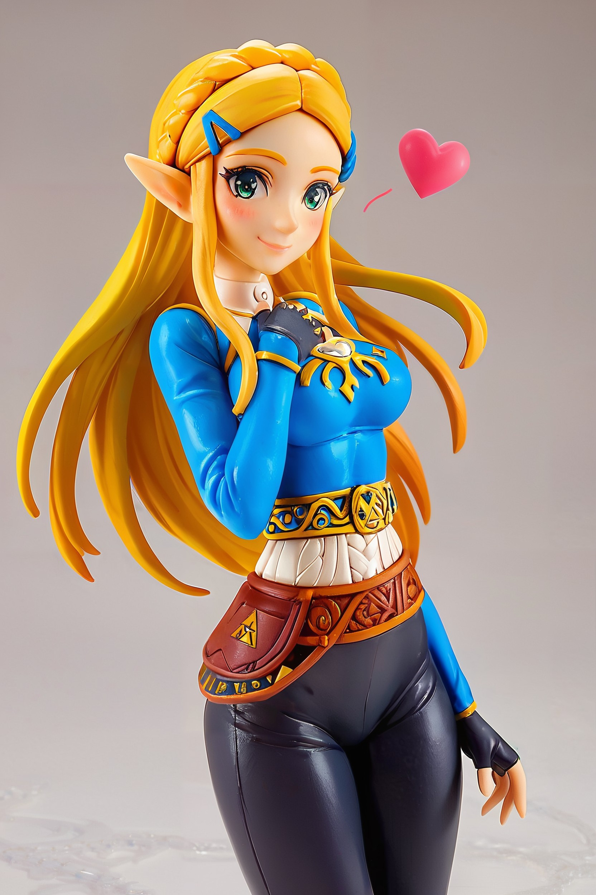
Pony
全般
Anime_Figure_P1
「Anime_Figure_P1」に特化した追加学習モデルです。Stable DiffusionでのAI画像生成にLoRAを導入し、特定要素の再現性を劇的に向上。効率的かつ高品質なビジュアルを求める全てのAI絵師必見のモデルです。
Size: 228,524,292 bytes
Pony
全般
ass_support_object_v0.1-pony
「ass_support_object_v0.1-pony」に特化した追加学習モデルです。Stable DiffusionでのAI画像生成にLoRAを導入し、特定要素の再現性を劇的に向上。効率的かつ高品質なビジュアルを求める全てのAI絵師必見のモデルです。
Size: 57,443,628 bytes

Pony
全般
ATRex_style-10
「ATRex_style-10」に特化した追加学習モデルです。Stable DiffusionでのAI画像生成にLoRAを導入し、特定要素の再現性を劇的に向上。効率的かつ高品質なビジュアルを求める全てのAI絵師必見のモデルです。
Size: 57,432,180 bytes
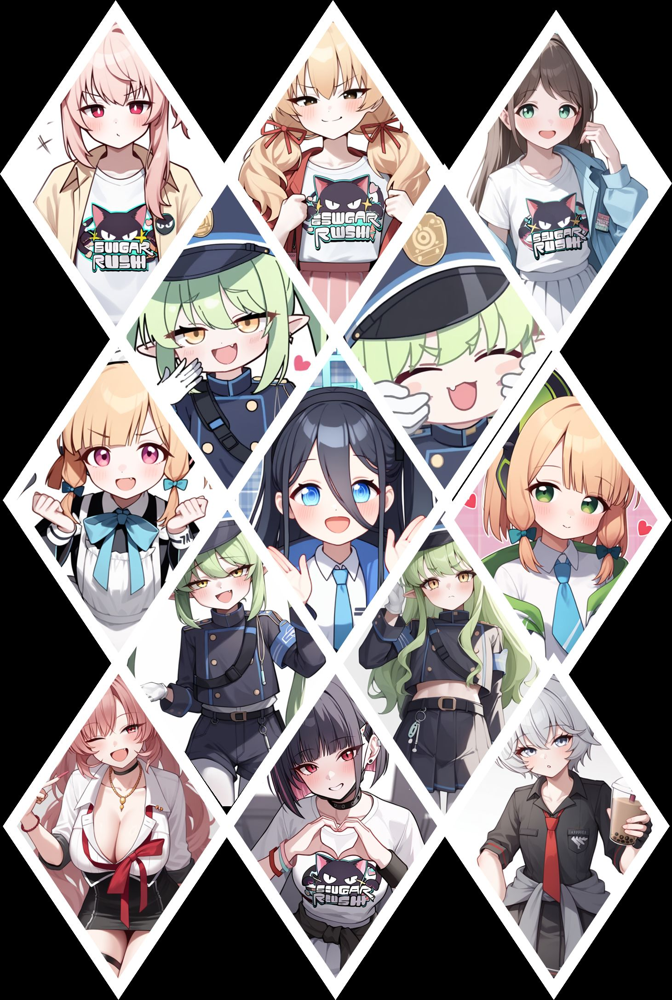
Pony
全般
blue_archive_all_v3
「blue_archive_all_v3」に特化した追加学習モデルです。Stable DiffusionでのAI画像生成にLoRAを導入し、特定要素の再現性を劇的に向上。効率的かつ高品質なビジュアルを求める全てのAI絵師必見のモデルです。
Size: 230,924,356 bytes
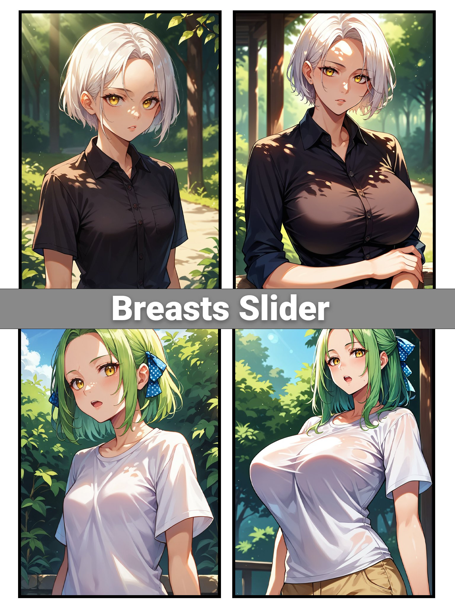
Pony
全般
breasts_size_slider_pdxl_goofy
「breasts_size_slider_pdxl_goofy」に特化した追加学習モデルです。Stable DiffusionでのAI画像生成にLoRAを導入し、特定要素の再現性を劇的に向上。効率的かつ高品質なビジュアルを求める全てのAI絵師必見のモデルです。
Size: 8,789,076 bytes
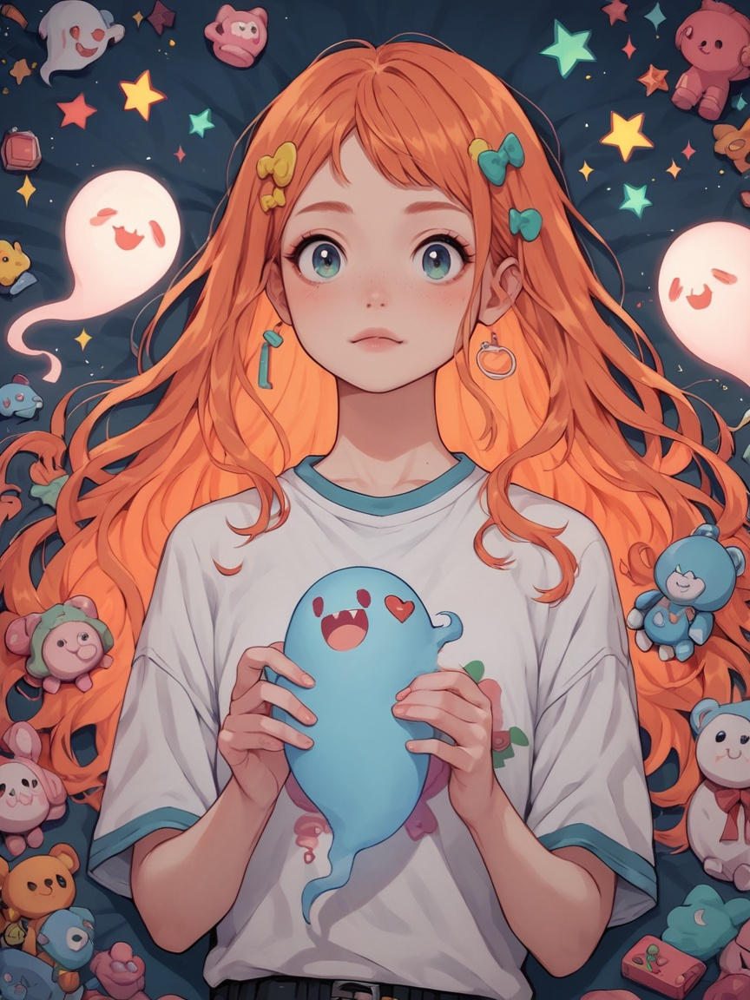
Pony
全般
c0l0urc0r3XLP2
「c0l0urc0r3XLP2」に特化した追加学習モデルです。Stable DiffusionでのAI画像生成にLoRAを導入し、特定要素の再現性を劇的に向上。効率的かつ高品質なビジュアルを求める全てのAI絵師必見のモデルです。
Size: 228,453,876 bytes
Pony
全般
c0ne
「c0ne」に特化した追加学習モデルです。Stable DiffusionでのAI画像生成にLoRAを導入し、特定要素の再現性を劇的に向上。効率的かつ高品質なビジュアルを求める全てのAI絵師必見のモデルです。
Size: 57,431,060 bytes
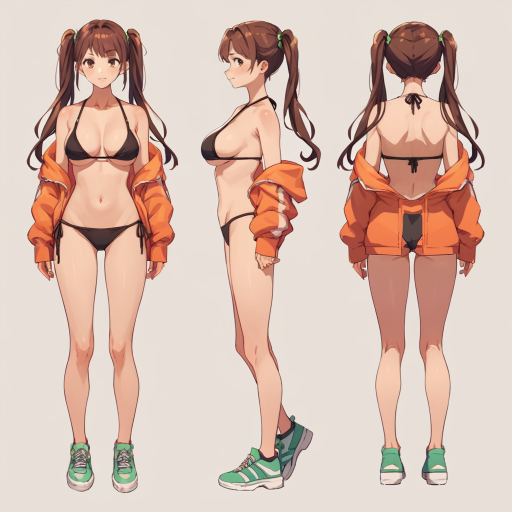
Pony
全般
character_sheet
「character_sheet」に特化した追加学習モデルです。Stable DiffusionでのAI画像生成にLoRAを導入し、特定要素の再現性を劇的に向上。効率的かつ高品質なビジュアルを求める全てのAI絵師必見のモデルです。
Size: 456,491,700 bytes
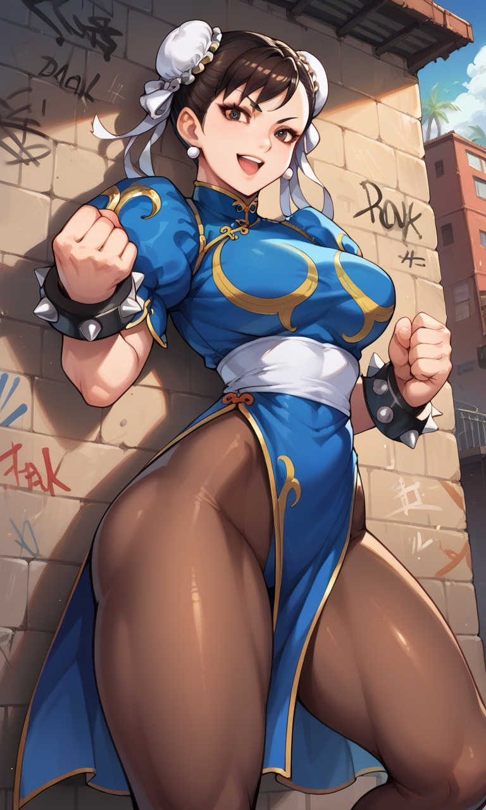
Pony
全般
ChunSF
「ChunSF」に特化した追加学習モデルです。Stable DiffusionでのAI画像生成にLoRAを導入し、特定要素の再現性を劇的に向上。効率的かつ高品質なビジュアルを求める全てのAI絵師必見のモデルです。
Size: 228,456,204 bytes
Pony
全般
CMN(Pony)0.1v
「CMN(Pony)0.1v」に特化した追加学習モデルです。Stable DiffusionでのAI画像生成にLoRAを導入し、特定要素の再現性を劇的に向上。効率的かつ高品質なビジュアルを求める全てのAI絵師必見のモデルです。
Size: 228,450,084 bytes
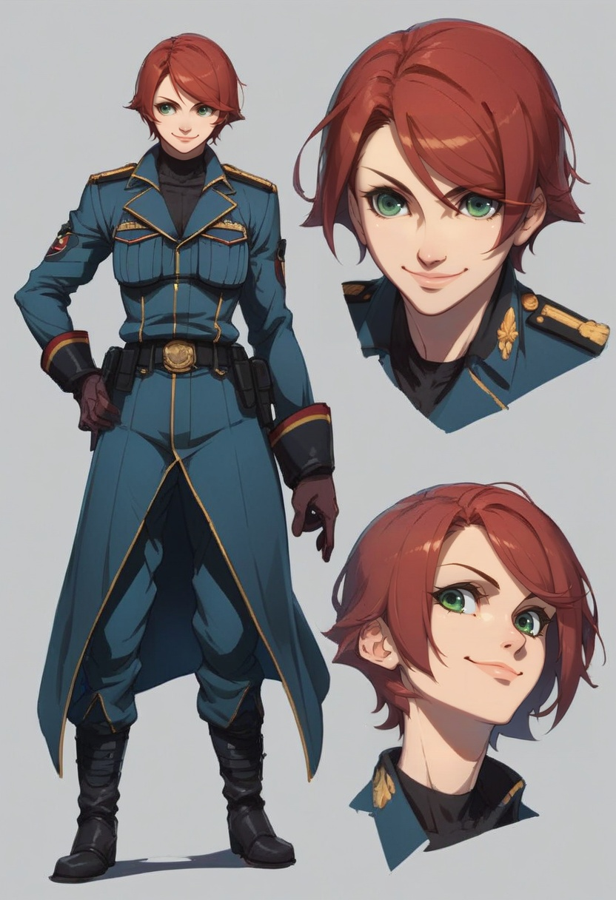
Pony
全般
concept-10
「concept-10」に特化した追加学習モデルです。Stable DiffusionでのAI画像生成にLoRAを導入し、特定要素の再現性を劇的に向上。効率的かつ高品質なビジュアルを求める全てのAI絵師必見のモデルです。
Size: 57,424,236 bytes
Pony
全般
D-ART_XL-V2
「D-ART_XL-V2」に特化した追加学習モデルです。Stable DiffusionでのAI画像生成にLoRAを導入し、特定要素の再現性を劇的に向上。効率的かつ高品質なビジュアルを求める全てのAI絵師必見のモデルです。
Size: 353,985,624 bytes

Pony
全般
d3t41l3dXLP
「d3t41l3dXLP」に特化した追加学習モデルです。Stable DiffusionでのAI画像生成にLoRAを導入し、特定要素の再現性を劇的に向上。効率的かつ高品質なビジュアルを求める全てのAI絵師必見のモデルです。
Size: 228,455,716 bytes
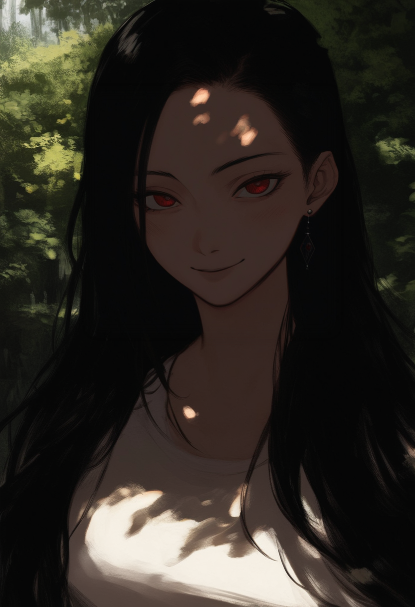
Pony
全般
DarkerThanDarkV1
「DarkerThanDarkV1」に特化した追加学習モデルです。Stable DiffusionでのAI画像生成にLoRAを導入し、特定要素の再現性を劇的に向上。効率的かつ高品質なビジュアルを求める全てのAI絵師必見のモデルです。
Size: 228,472,492 bytes

Pony
全般
Detailed anime style - SDXL_pony
「Detailed anime style - SDXL_pony」に特化した追加学習モデルです。Stable DiffusionでのAI画像生成にLoRAを導入し、特定要素の再現性を劇的に向上。効率的かつ高品質なビジュアルを求める全てのAI絵師必見のモデルです。
Size: 456,484,044 bytes

Pony
全般
Digital Art Style SDXL_LoRA_Pony Diffusion V6 XL
「Digital Art Style SDXL_LoRA_Pony Diffusion V6 XL」に特化した追加学習モデルです。Stable DiffusionでのAI画像生成にLoRAを導入し、特定要素の再現性を劇的に向上。効率的かつ高品質なビジュアルを求める全てのAI絵師必見のモデルです。
Size: 228,456,380 bytes
Pony
全般
DynamicPose_alpha1.0_rank4_noxattn_100steps
「DynamicPose_alpha1.0_rank4_noxattn_100steps」に特化した追加学習モデルです。Stable DiffusionでのAI画像生成にLoRAを導入し、特定要素の再現性を劇的に向上。効率的かつ高品質なビジュアルを求める全てのAI絵師必見のモデルです。
Size: 8,789,076 bytes
Pony
全般
EnvyPonyPrettyEyes01
「EnvyPonyPrettyEyes01」に特化した追加学習モデルです。Stable DiffusionでのAI画像生成にLoRAを導入し、特定要素の再現性を劇的に向上。効率的かつ高品質なビジュアルを求める全てのAI絵師必見のモデルです。
Size: 362,050,864 bytes
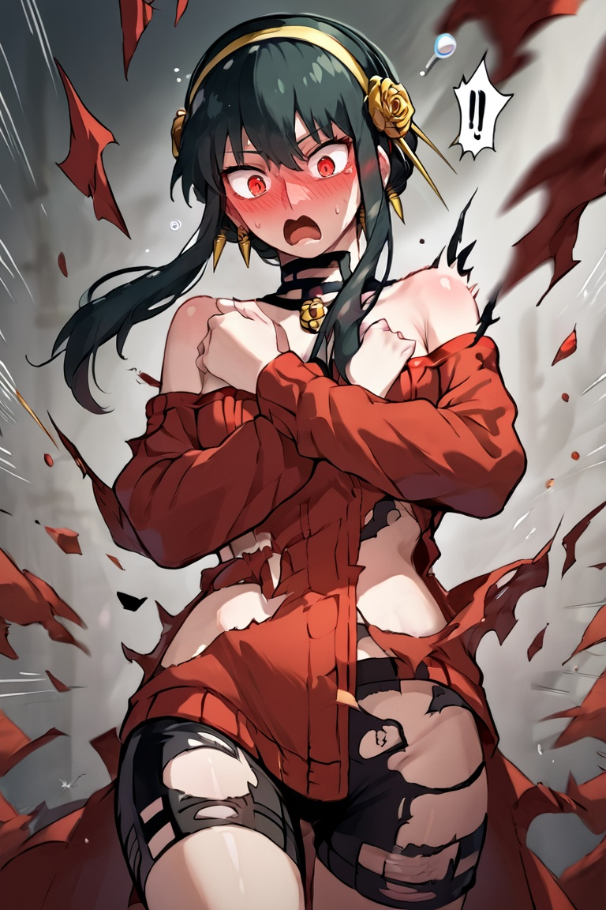
Pony
全般
explodingclothes_pony
「explodingclothes_pony」に特化した追加学習モデルです。Stable DiffusionでのAI画像生成にLoRAを導入し、特定要素の再現性を劇的に向上。効率的かつ高品質なビジュアルを求める全てのAI絵師必見のモデルです。
Size: 57,435,052 bytes

Pony
全般
Eyes_Lora_Pony_Perfect_eyes
「Eyes_Lora_Pony_Perfect_eyes」に特化した追加学習モデルです。Stable DiffusionでのAI画像生成にLoRAを導入し、特定要素の再現性を劇的に向上。効率的かつ高品質なビジュアルを求める全てのAI絵師必見のモデルです。
Size: 228,455,668 bytes
.preview.jpg)
Pony
全般
f3mp0vXLP (1)
「f3mp0vXLP (1)」に特化した追加学習モデルです。Stable DiffusionでのAI画像生成にLoRAを導入し、特定要素の再現性を劇的に向上。効率的かつ高品質なビジュアルを求める全てのAI絵師必見のモデルです。
Size: 228,472,612 bytes
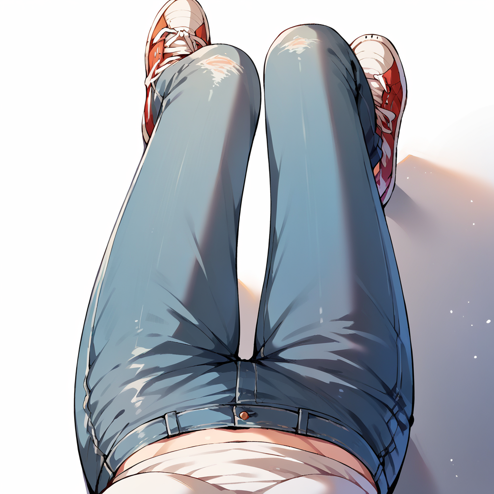
Pony
全般
f3mp0vXLP
「f3mp0vXLP」に特化した追加学習モデルです。Stable DiffusionでのAI画像生成にLoRAを導入し、特定要素の再現性を劇的に向上。効率的かつ高品質なビジュアルを求める全てのAI絵師必見のモデルです。
Size: 228,472,612 bytes
Pony
全般
famima_storefront_PONY_V1
「famima_storefront_PONY_V1」に特化した追加学習モデルです。Stable DiffusionでのAI画像生成にLoRAを導入し、特定要素の再現性を劇的に向上。効率的かつ高品質なビジュアルを求める全てのAI絵師必見のモデルです。
Size: 114,432,180 bytes
Pony
全般
feifei_20250205125355
「feifei_20250205125355」に特化した追加学習モデルです。Stable DiffusionでのAI画像生成にLoRAを導入し、特定要素の再現性を劇的に向上。効率的かつ高品質なビジュアルを求める全てのAI絵師必見のモデルです。
Size: 75,613,054 bytes

Pony
全般
g0th1cPXL
「g0th1cPXL」に特化した追加学習モデルです。Stable DiffusionでのAI画像生成にLoRAを導入し、特定要素の再現性を劇的に向上。効率的かつ高品質なビジュアルを求める全てのAI絵師必見のモデルです。
Size: 228,453,668 bytes

Pony
全般
g4n1m3XLP
「g4n1m3XLP」に特化した追加学習モデルです。Stable DiffusionでのAI画像生成にLoRAを導入し、特定要素の再現性を劇的に向上。効率的かつ高品質なビジュアルを求める全てのAI絵師必見のモデルです。
Size: 228,455,036 bytes
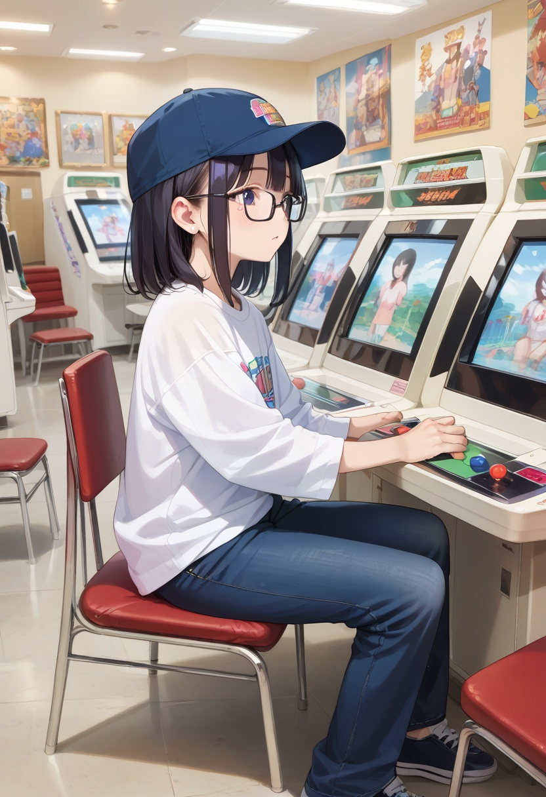
Pony
全般
gamecenter_pony_V1
「gamecenter_pony_V1」に特化した追加学習モデルです。Stable DiffusionでのAI画像生成にLoRAを導入し、特定要素の再現性を劇的に向上。効率的かつ高品質なビジュアルを求める全てのAI絵師必見のモデルです。
Size: 405,032,660 bytes
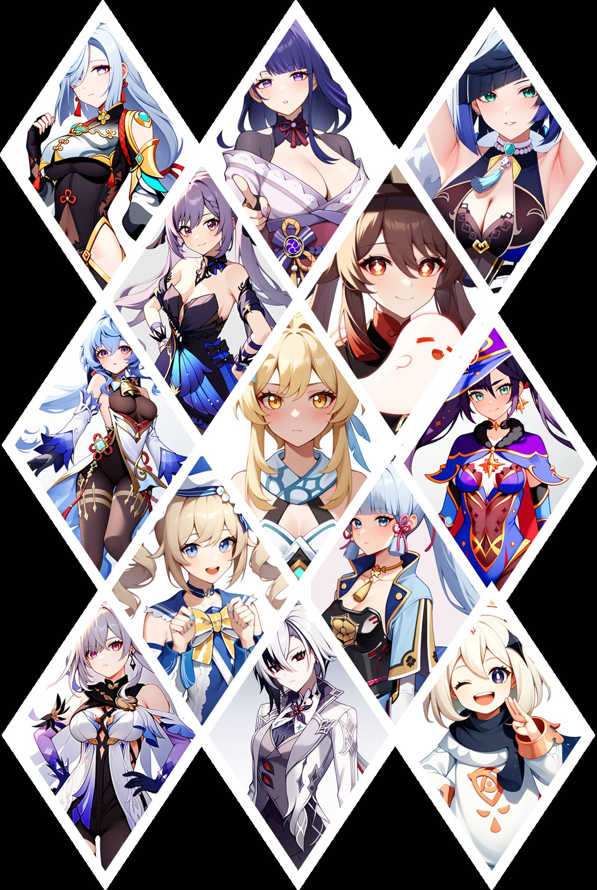
Pony
全般
genshin_v4
「genshin_v4」に特化した追加学習モデルです。Stable DiffusionでのAI画像生成にLoRAを導入し、特定要素の再現性を劇的に向上。効率的かつ高品質なビジュアルを求める全てのAI絵師必見のモデルです。
Size: 230,580,028 bytes
Pony
全般
Goth_girl_XL-v2
「Goth_girl_XL-v2」に特化した追加学習モデルです。Stable DiffusionでのAI画像生成にLoRAを導入し、特定要素の再現性を劇的に向上。効率的かつ高品質なビジュアルを求める全てのAI絵師必見のモデルです。
Size: 228,466,772 bytes
Pony
全般
Granblue_Fantasy_PSXL
「Granblue_Fantasy_PSXL」に特化した追加学習モデルです。Stable DiffusionでのAI画像生成にLoRAを導入し、特定要素の再現性を劇的に向上。効率的かつ高品質なビジュアルを求める全てのAI絵師必見のモデルです。
Size: 228,455,428 bytes
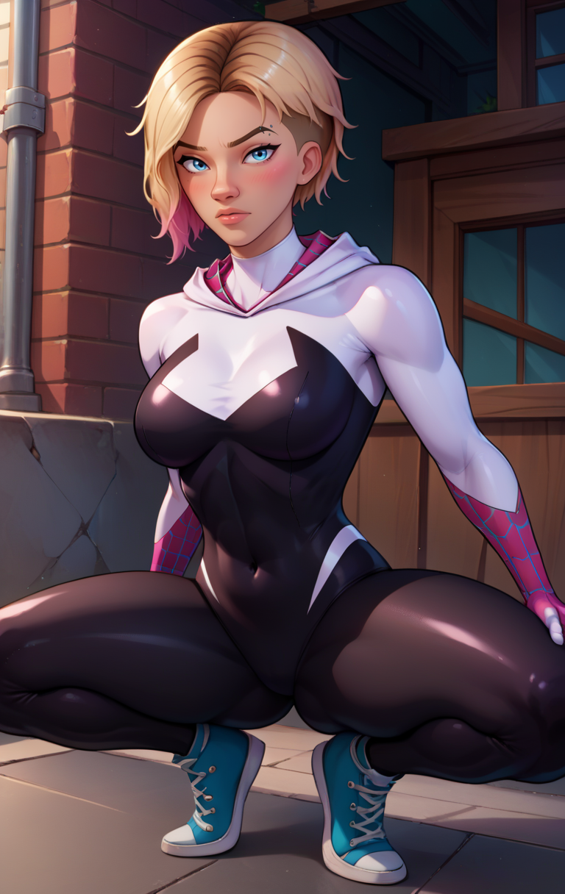
Pony
全般
GwenstacySDXL-10
「GwenstacySDXL-10」に特化した追加学習モデルです。Stable DiffusionでのAI画像生成にLoRAを導入し、特定要素の再現性を劇的に向上。効率的かつ高品質なビジュアルを求める全てのAI絵師必見のモデルです。
Size: 57,431,724 bytes
Pony
全般
hanabusa_lisa-pony-08
「hanabusa_lisa-pony-08」に特化した追加学習モデルです。Stable DiffusionでのAI画像生成にLoRAを導入し、特定要素の再現性を劇的に向上。効率的かつ高品質なビジュアルを求める全てのAI絵師必見のモデルです。
Size: 50,971,812 bytes
Pony
全般
hassakuXLPony_v13BetterEyesVersion
「hassakuXLPony_v13BetterEyesVersion」に特化した追加学習モデルです。Stable DiffusionでのAI画像生成にLoRAを導入し、特定要素の再現性を劇的に向上。効率的かつ高品質なビジュアルを求める全てのAI絵師必見のモデルです。
Size: 6,938,042,770 bytes
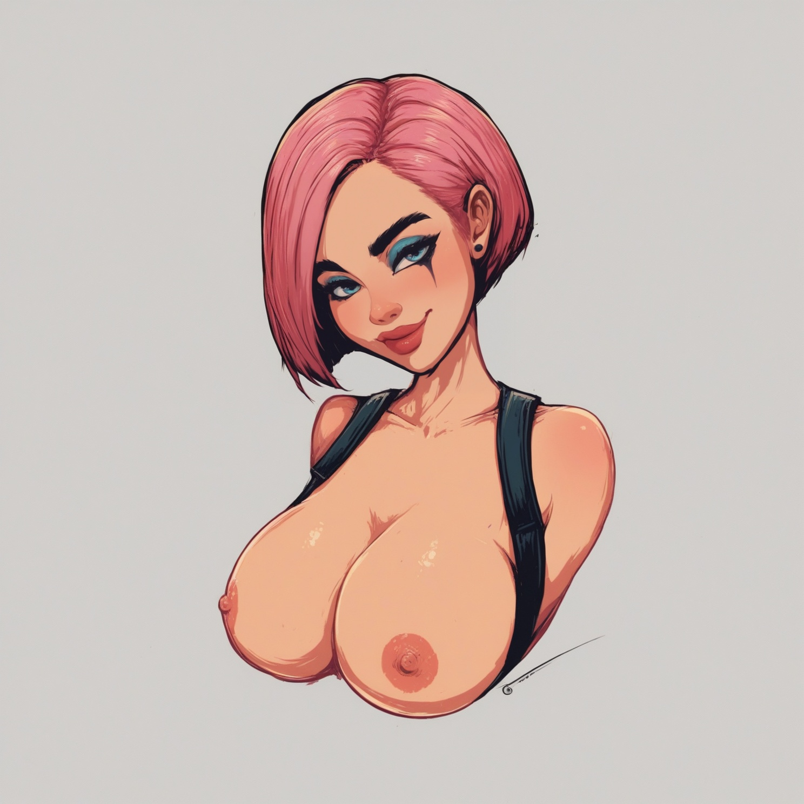
Pony
全般
helix
「helix」に特化した追加学習モデルです。Stable DiffusionでのAI画像生成にLoRAを導入し、特定要素の再現性を劇的に向上。効率的かつ高品質なビジュアルを求める全てのAI絵師必見のモデルです。
Size: 228,466,324 bytes
Pony
全般
hinaPonyRealistic_v5-mbp-rev1
「hinaPonyRealistic_v5-mbp-rev1」に特化した追加学習モデルです。Stable DiffusionでのAI画像生成にLoRAを導入し、特定要素の再現性を劇的に向上。効率的かつ高品質なビジュアルを求める全てのAI絵師必見のモデルです。
Size: 121,823,376 bytes
Pony
全般
hosekiLustrousmixPony_v20
「hosekiLustrousmixPony_v20」に特化した追加学習モデルです。Stable DiffusionでのAI画像生成にLoRAを導入し、特定要素の再現性を劇的に向上。効率的かつ高品質なビジュアルを求める全てのAI絵師必見のモデルです。
Size: 7,105,350,162 bytes
Pony
全般
hypnotized_face_pony
「hypnotized_face_pony」に特化した追加学習モデルです。Stable DiffusionでのAI画像生成にLoRAを導入し、特定要素の再現性を劇的に向上。効率的かつ高品質なビジュアルを求める全てのAI絵師必見のモデルです。
Size: 185,706,096 bytes
Pony
全般
Ikazuchi_from_Kantai_Collection_PD
「Ikazuchi_from_Kantai_Collection_PD」に特化した追加学習モデルです。Stable DiffusionでのAI画像生成にLoRAを導入し、特定要素の再現性を劇的に向上。効率的かつ高品質なビジュアルを求める全てのAI絵師必見のモデルです。
Size: 228,508,876 bytes
Pony
全般
Inazuma_from_Kantai_Collection_PD
「Inazuma_from_Kantai_Collection_PD」に特化した追加学習モデルです。Stable DiffusionでのAI画像生成にLoRAを導入し、特定要素の再現性を劇的に向上。効率的かつ高品質なビジュアルを求める全てのAI絵師必見のモデルです。
Size: 228,524,972 bytes
Pony
全般
Inazuma_Japan_Uniform_Orion
「Inazuma_Japan_Uniform_Orion」に特化した追加学習モデルです。Stable DiffusionでのAI画像生成にLoRAを導入し、特定要素の再現性を劇的に向上。効率的かつ高品質なビジュアルを求める全てのAI絵師必見のモデルです。
Size: 228,454,644 bytes
Pony
全般
IshikePony
「IshikePony」に特化した追加学習モデルです。Stable DiffusionでのAI画像生成にLoRAを導入し、特定要素の再現性を劇的に向上。効率的かつ高品質なビジュアルを求める全てのAI絵師必見のモデルです。
Size: 228,461,148 bytes
Pony
全般
Japan_Design_White_Blouses
「Japan_Design_White_Blouses」に特化した追加学習モデルです。Stable DiffusionでのAI画像生成にLoRAを導入し、特定要素の再現性を劇的に向上。効率的かつ高品質なビジュアルを求める全てのAI絵師必見のモデルです。
Size: 228,453,996 bytes
Pony
全般
Japan_realistic_style-000013
「Japan_realistic_style-000013」に特化した追加学習モデルです。Stable DiffusionでのAI画像生成にLoRAを導入し、特定要素の再現性を劇的に向上。効率的かつ高品質なビジュアルを求める全てのAI絵師必見のモデルです。
Size: 456,506,028 bytes
Pony
全般
Kaori_Saeki_Pony
「Kaori_Saeki_Pony」に特化した追加学習モデルです。Stable DiffusionでのAI画像生成にLoRAを導入し、特定要素の再現性を劇的に向上。効率的かつ高品質なビジュアルを求める全てのAI絵師必見のモデルです。
Size: 50,931,780 bytes
Pony
全般
konosuba-aqua-s2-ponyxl-lora-nochekaiser
「konosuba-aqua-s2-ponyxl-lora-nochekaiser」に特化した追加学習モデルです。Stable DiffusionでのAI画像生成にLoRAを導入し、特定要素の再現性を劇的に向上。効率的かつ高品質なビジュアルを求める全てのAI絵師必見のモデルです。
Size: 228,471,180 bytes
Pony
全般
KraiAnimePony
「KraiAnimePony」に特化した追加学習モデルです。Stable DiffusionでのAI画像生成にLoRAを導入し、特定要素の再現性を劇的に向上。効率的かつ高品質なビジュアルを求める全てのAI絵師必見のモデルです。
Size: 228,450,268 bytes
Pony
全般
leggings_v2.6-pony
「leggings_v2.6-pony」に特化した追加学習モデルです。Stable DiffusionでのAI画像生成にLoRAを導入し、特定要素の再現性を劇的に向上。効率的かつ高品質なビジュアルを求める全てのAI絵師必見のモデルです。
Size: 57,425,444 bytes
Pony
全般
lms_v0.1_cwhj
「lms_v0.1_cwhj」に特化した追加学習モデルです。Stable DiffusionでのAI画像生成にLoRAを導入し、特定要素の再現性を劇的に向上。効率的かつ高品質なビジュアルを求める全てのAI絵師必見のモデルです。
Size: 170,565,932 bytes
Pony
全般
mak1ma0XL_Pony_v1
「mak1ma0XL_Pony_v1」に特化した追加学習モデルです。Stable DiffusionでのAI画像生成にLoRAを導入し、特定要素の再現性を劇的に向上。効率的かつ高品質なビジュアルを求める全てのAI絵師必見のモデルです。
Size: 228,456,892 bytes
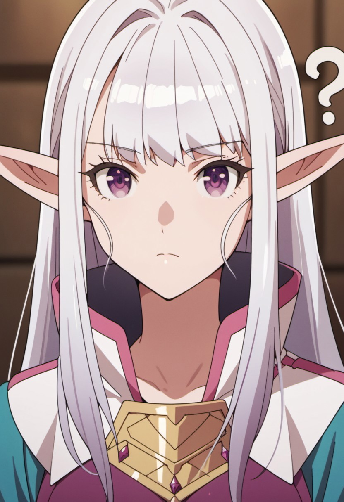
Pony
全般
Mariabelle-55
「Mariabelle-55」に特化した追加学習モデルです。Stable DiffusionでのAI画像生成にLoRAを導入し、特定要素の再現性を劇的に向上。効率的かつ高品質なビジュアルを求める全てのAI絵師必見のモデルです。
Size: 114,436,308 bytes
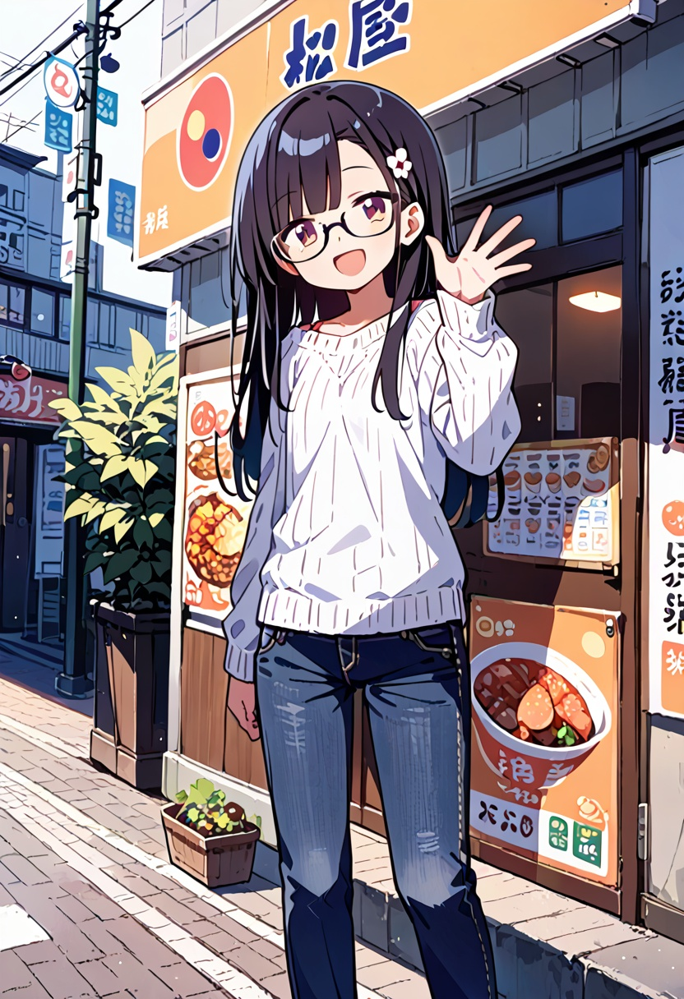
Pony
全般
matsuya_pony_V1
「matsuya_pony_V1」に特化した追加学習モデルです。Stable DiffusionでのAI画像生成にLoRAを導入し、特定要素の再現性を劇的に向上。効率的かつ高品質なビジュアルを求める全てのAI絵師必見のモデルです。
Size: 202,688,460 bytes
Pony
全般
MatureFemalePony
「MatureFemalePony」に特化した追加学習モデルです。Stable DiffusionでのAI画像生成にLoRAを導入し、特定要素の再現性を劇的に向上。効率的かつ高品質なビジュアルを求める全てのAI絵師必見のモデルです。
Size: 93,015,608 bytes
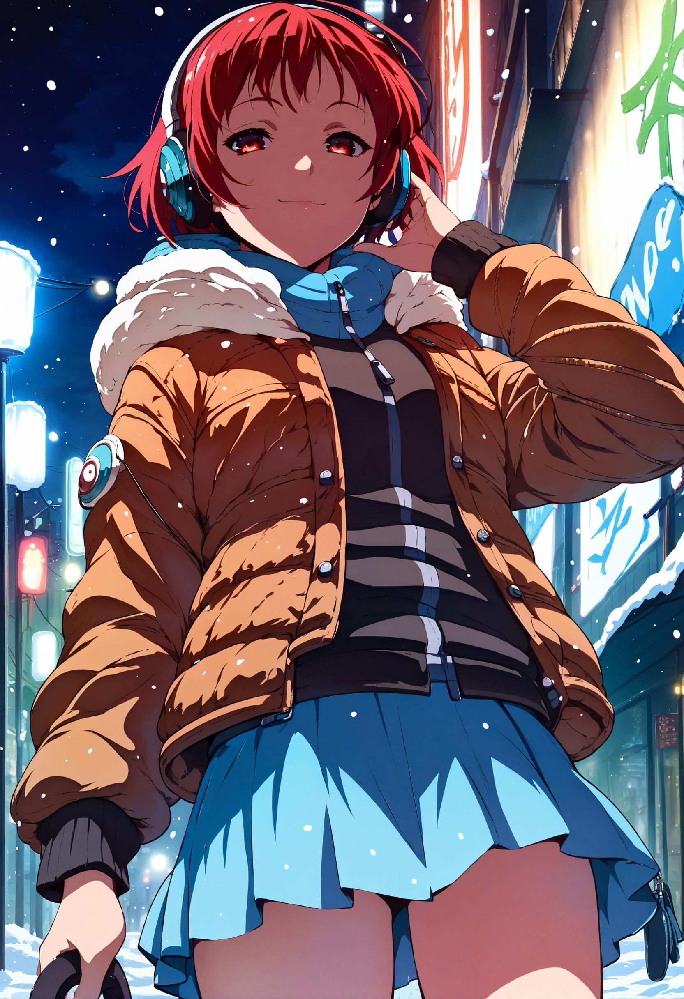
Pony
全般
MeMaXLV3_TypeB_AutismMix
「MeMaXLV3_TypeB_AutismMix」に特化した追加学習モデルです。Stable DiffusionでのAI画像生成にLoRAを導入し、特定要素の再現性を劇的に向上。効率的かつ高品質なビジュアルを求める全てのAI絵師必見のモデルです。
Size: 228,456,028 bytes
Pony
全般
micro_gold_dress_v0.6-pony
「micro_gold_dress_v0.6-pony」に特化した追加学習モデルです。Stable DiffusionでのAI画像生成にLoRAを導入し、特定要素の再現性を劇的に向上。効率的かつ高品質なビジュアルを求める全てのAI絵師必見のモデルです。
Size: 57,427,484 bytes
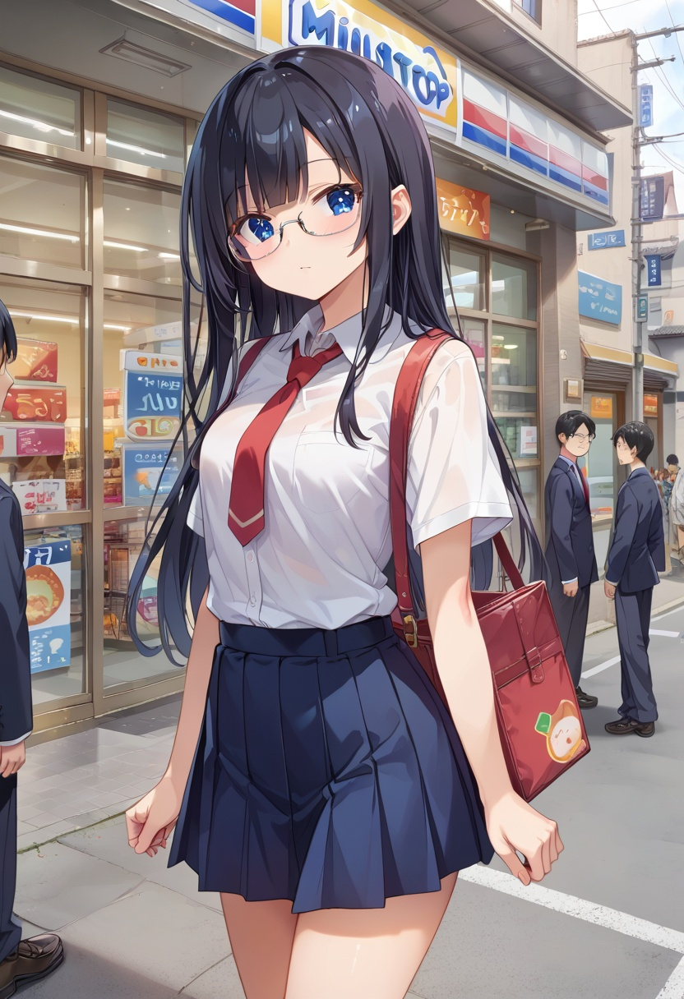
Pony
全般
ministop_storefront_PONY_V1
「ministop_storefront_PONY_V1」に特化した追加学習モデルです。Stable DiffusionでのAI画像生成にLoRAを導入し、特定要素の再現性を劇的に向上。効率的かつ高品質なビジュアルを求める全てのAI絵師必見のモデルです。
Size: 114,432,212 bytes
Pony
全般
miyakko_pony_V1
「miyakko_pony_V1」に特化した追加学習モデルです。Stable DiffusionでのAI画像生成にLoRAを導入し、特定要素の再現性を劇的に向上。効率的かつ高品質なビジュアルを求める全てのAI絵師必見のモデルです。
Size: 405,032,236 bytes
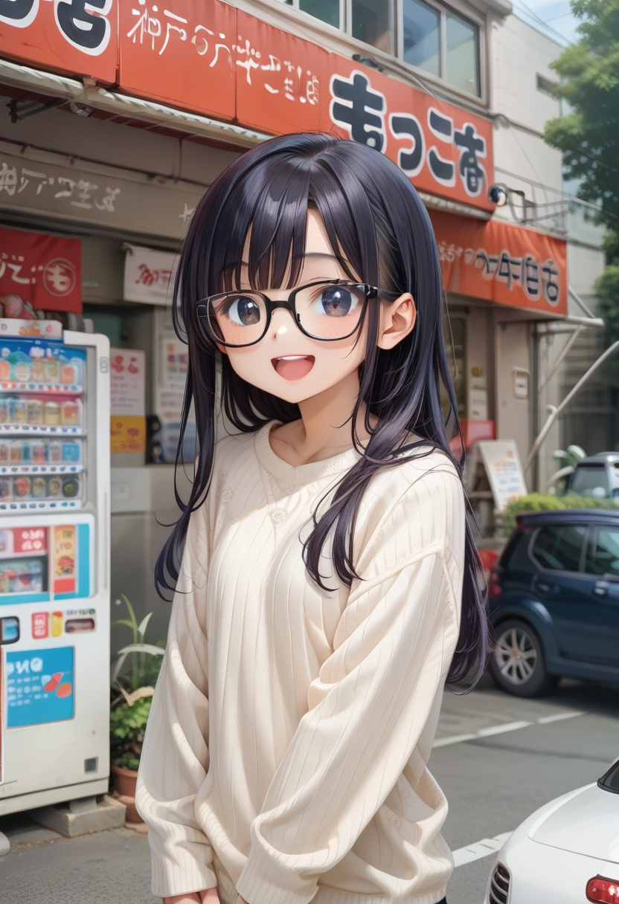
Pony
全般
moccosu_pony_V1
「moccosu_pony_V1」に特化した追加学習モデルです。Stable DiffusionでのAI画像生成にLoRAを導入し、特定要素の再現性を劇的に向上。効率的かつ高品質なビジュアルを求める全てのAI絵師必見のモデルです。
Size: 405,031,988 bytes
Pony
全般
modern_anime_screencap_v1_0
「modern_anime_screencap_v1_0」に特化した追加学習モデルです。Stable DiffusionでのAI画像生成にLoRAを導入し、特定要素の再現性を劇的に向上。効率的かつ高品質なビジュアルを求める全てのAI絵師必見のモデルです。
Size: 228,472,580 bytes
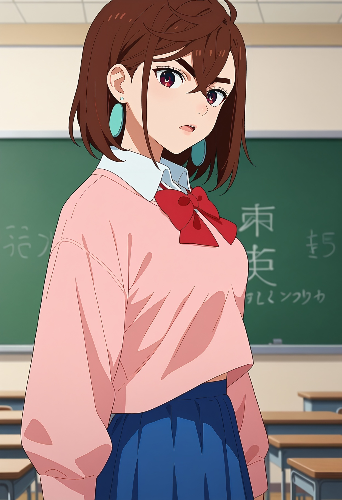
Pony
全般
Momo_Ayase_Dandadan_V2
「Momo_Ayase_Dandadan_V2」に特化した追加学習モデルです。Stable DiffusionでのAI画像生成にLoRAを導入し、特定要素の再現性を劇的に向上。効率的かつ高品質なビジュアルを求める全てのAI絵師必見のモデルです。
Size: 57,432,188 bytes
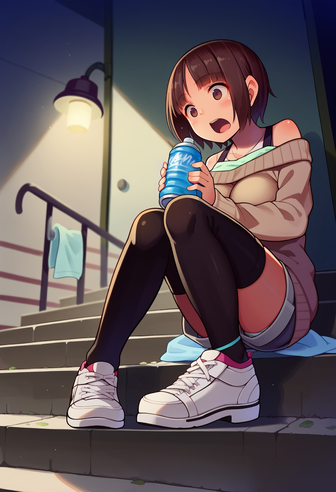
Pony
全般
muk_pony_v2
「muk_pony_v2」に特化した追加学習モデルです。Stable DiffusionでのAI画像生成にLoRAを導入し、特定要素の再現性を劇的に向上。効率的かつ高品質なビジュアルを求める全てのAI絵師必見のモデルです。
Size: 71,318,768 bytes
Pony
全般
NetCafe_PONY_V1
「NetCafe_PONY_V1」に特化した追加学習モデルです。Stable DiffusionでのAI画像生成にLoRAを導入し、特定要素の再現性を劇的に向上。効率的かつ高品質なビジュアルを求める全てのAI絵師必見のモデルです。
Size: 202,689,396 bytes
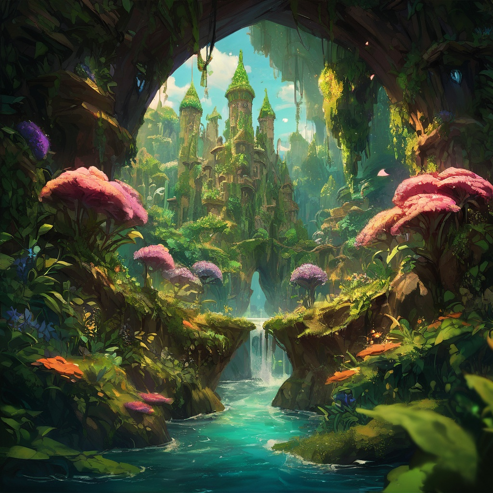
Pony
全般
noc-AestheticScene_Pony
「noc-AestheticScene_Pony」に特化した追加学習モデルです。Stable DiffusionでのAI画像生成にLoRAを導入し、特定要素の再現性を劇的に向上。効率的かつ高品質なビジュアルを求める全てのAI絵師必見のモデルです。
Size: 114,435,924 bytes
Pony
全般
nyantcha_style_pdxl_v2_goofy
「nyantcha_style_pdxl_v2_goofy」に特化した追加学習モデルです。Stable DiffusionでのAI画像生成にLoRAを導入し、特定要素の再現性を劇的に向上。効率的かつ高品質なビジュアルを求める全てのAI絵師必見のモデルです。
Size: 114,428,803 bytes
Pony
全般
ohogao_PonyXL_v2
「ohogao_PonyXL_v2」に特化した追加学習モデルです。Stable DiffusionでのAI画像生成にLoRAを導入し、特定要素の再現性を劇的に向上。効率的かつ高品質なビジュアルを求める全てのAI絵師必見のモデルです。
Size: 114,442,772 bytes
Pony
全般
partially_underwater_shot_v0.1-pony-dim8fp16
「partially_underwater_shot_v0.1-pony-dim8fp16」に特化した追加学習モデルです。Stable DiffusionでのAI画像生成にLoRAを導入し、特定要素の再現性を劇的に向上。効率的かつ高品質なビジュアルを求める全てのAI絵師必見のモデルです。
Size: 51,544,004 bytes
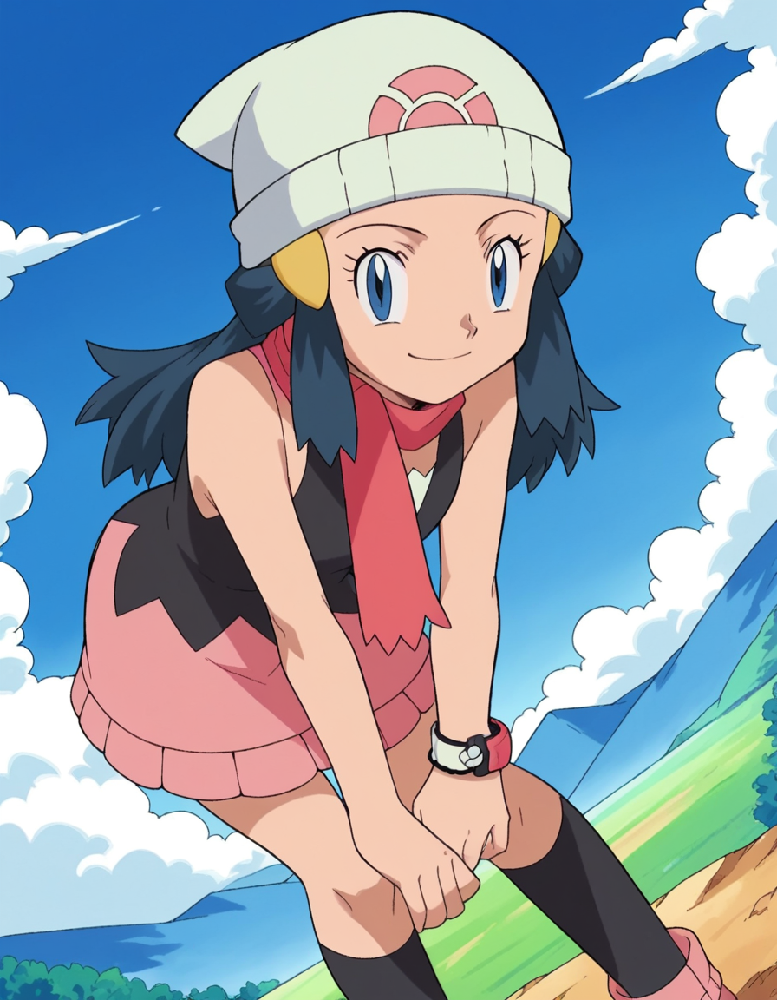
Pony
全般
pokemon-dawn-anime-ponyxl-lora-nochekaiser
「pokemon-dawn-anime-ponyxl-lora-nochekaiser」に特化した追加学習モデルです。Stable DiffusionでのAI画像生成にLoRAを導入し、特定要素の再現性を劇的に向上。効率的かつ高品質なビジュアルを求める全てのAI絵師必見のモデルです。
Size: 228,466,028 bytes
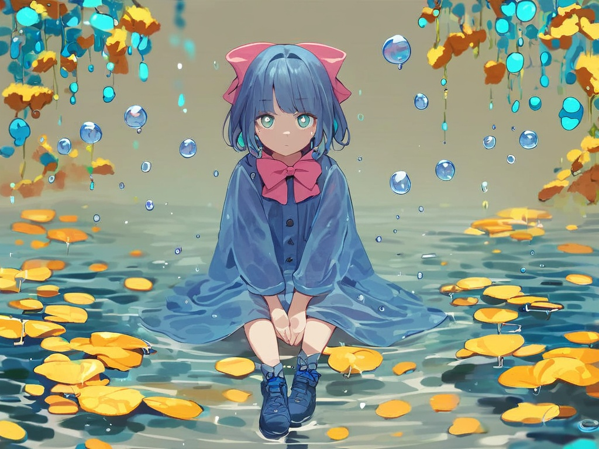
Pony
全般
Pony_DetailV2.0
「Pony_DetailV2.0」に特化した追加学習モデルです。Stable DiffusionでのAI画像生成にLoRAを導入し、特定要素の再現性を劇的に向上。効率的かつ高品質なビジュアルを求める全てのAI絵師必見のモデルです。
Size: 11,862,048 bytes
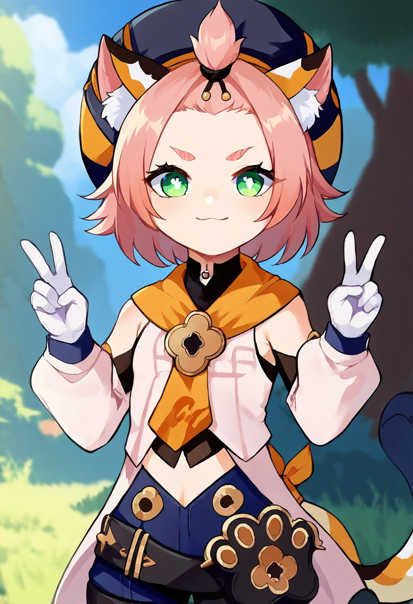
Pony
全般
pony_good_hands
「pony_good_hands」に特化した追加学習モデルです。Stable DiffusionでのAI画像生成にLoRAを導入し、特定要素の再現性を劇的に向上。効率的かつ高品質なビジュアルを求める全てのAI絵師必見のモデルです。
Size: 228,485,068 bytes
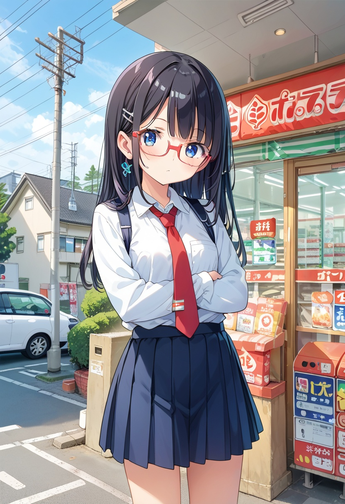
Pony
全般
popura_storefront_PONY_V1
「popura_storefront_PONY_V1」に特化した追加学習モデルです。Stable DiffusionでのAI画像生成にLoRAを導入し、特定要素の再現性を劇的に向上。効率的かつ高品質なビジュアルを求める全てのAI絵師必見のモデルです。
Size: 114,432,196 bytes
Pony
全般
princess_carry_v0.3-pony
「princess_carry_v0.3-pony」に特化した追加学習モデルです。Stable DiffusionでのAI画像生成にLoRAを導入し、特定要素の再現性を劇的に向上。効率的かつ高品質なビジュアルを求める全てのAI絵師必見のモデルです。
Size: 57,460,908 bytes
Pony
全般
RD-MAnon-XLV1.1-000014
「RD-MAnon-XLV1.1-000014」に特化した追加学習モデルです。Stable DiffusionでのAI画像生成にLoRAを導入し、特定要素の再現性を劇的に向上。効率的かつ高品質なビジュアルを求める全てのAI絵師必見のモデルです。
Size: 114,455,324 bytes
Pony
全般
RealisticAnime
「RealisticAnime」に特化した追加学習モデルです。Stable DiffusionでのAI画像生成にLoRAを導入し、特定要素の再現性を劇的に向上。効率的かつ高品質なビジュアルを求める全てのAI絵師必見のモデルです。
Size: 228,481,924 bytes
Pony
全般
Reika_Kitami_Pony
「Reika_Kitami_Pony」に特化した追加学習モデルです。Stable DiffusionでのAI画像生成にLoRAを導入し、特定要素の再現性を劇的に向上。効率的かつ高品質なビジュアルを求める全てのAI絵師必見のモデルです。
Size: 50,929,380 bytes
Pony
全般
Resistance_Japan_r1
「Resistance_Japan_r1」に特化した追加学習モデルです。Stable DiffusionでのAI画像生成にLoRAを導入し、特定要素の再現性を劇的に向上。効率的かつ高品質なビジュアルを求める全てのAI絵師必見のモデルです。
Size: 57,423,812 bytes
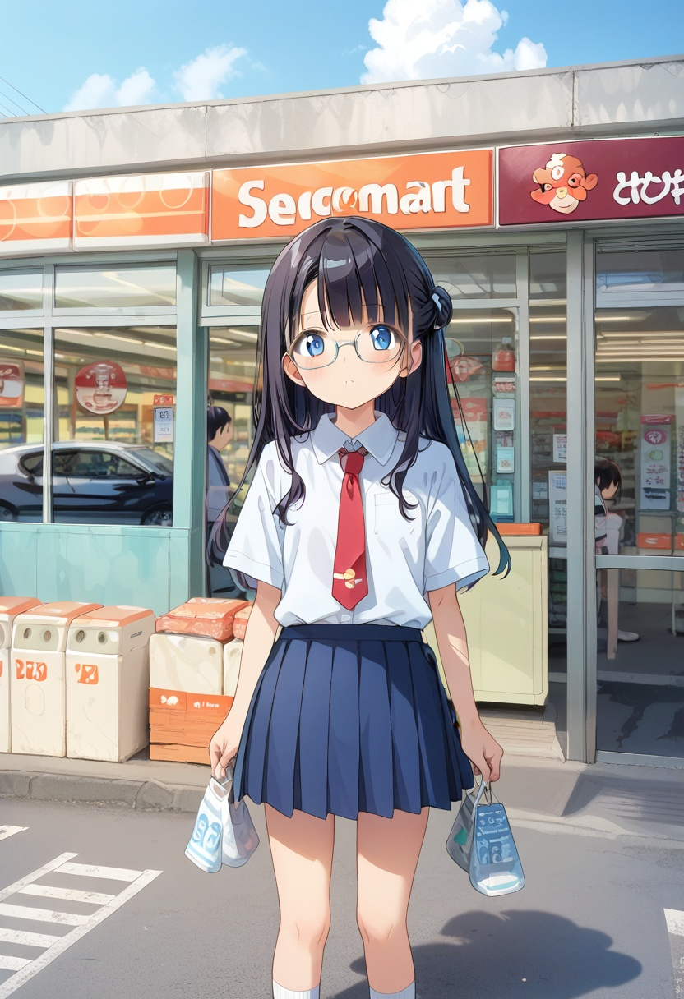
Pony
全般
seicomart_storefront_PONY_V1
「seicomart_storefront_PONY_V1」に特化した追加学習モデルです。Stable DiffusionでのAI画像生成にLoRAを導入し、特定要素の再現性を劇的に向上。効率的かつ高品質なビジュアルを求める全てのAI絵師必見のモデルです。
Size: 114,432,316 bytes
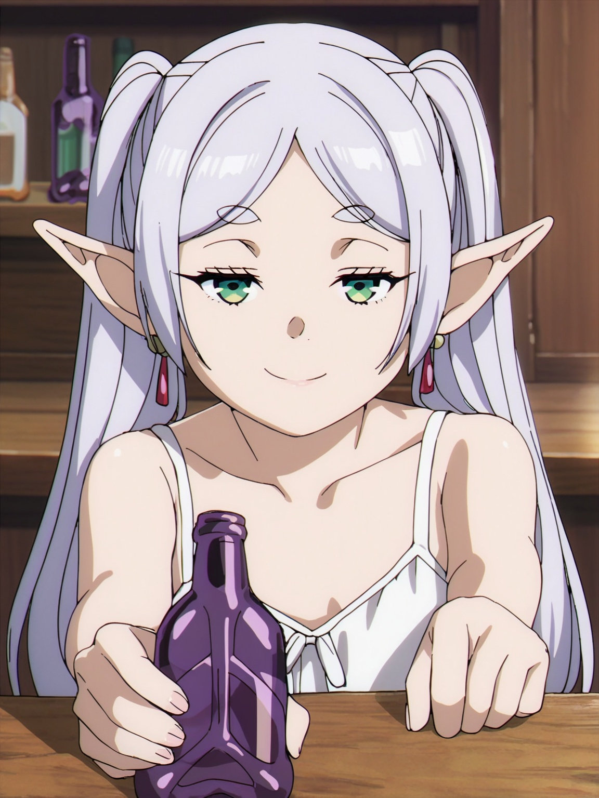
Pony
全般
sfrieren_ponyxl
「sfrieren_ponyxl」に特化した追加学習モデルです。Stable DiffusionでのAI画像生成にLoRAを導入し、特定要素の再現性を劇的に向上。効率的かつ高品質なビジュアルを求める全てのAI絵師必見のモデルです。
Size: 114,438,708 bytes
Pony
全般
shiny_nai_pdxl
「shiny_nai_pdxl」に特化した追加学習モデルです。Stable DiffusionでのAI画像生成にLoRAを導入し、特定要素の再現性を劇的に向上。効率的かつ高品質なビジュアルを求める全てのAI絵師必見のモデルです。
Size: 228,447,692 bytes

Pony
全般
Silent hill F Hinako Shimizu
「Silent hill F Hinako Shimizu」に特化した追加学習モデルです。Stable DiffusionでのAI画像生成にLoRAを導入し、特定要素の再現性を劇的に向上。効率的かつ高品質なビジュアルを求める全てのAI絵師必見のモデルです。
Size: 228,457,556 bytes
Pony
全般
slime_girl_pony
「slime_girl_pony」に特化した追加学習モデルです。Stable DiffusionでのAI画像生成にLoRAを導入し、特定要素の再現性を劇的に向上。効率的かつ高品質なビジュアルを求める全てのAI絵師必見のモデルです。
Size: 228,497,548 bytes
.preview.jpg)
Pony
全般
slimy_v0.3-pony (1)
「slimy_v0.3-pony (1)」に特化した追加学習モデルです。Stable DiffusionでのAI画像生成にLoRAを導入し、特定要素の再現性を劇的に向上。効率的かつ高品質なビジュアルを求める全てのAI絵師必見のモデルです。
Size: 57,462,924 bytes
Pony
全般
slimy_v0.3-pony
「slimy_v0.3-pony」に特化した追加学習モデルです。Stable DiffusionでのAI画像生成にLoRAを導入し、特定要素の再現性を劇的に向上。効率的かつ高品質なビジュアルを求める全てのAI絵師必見のモデルです。
Size: 57,462,924 bytes
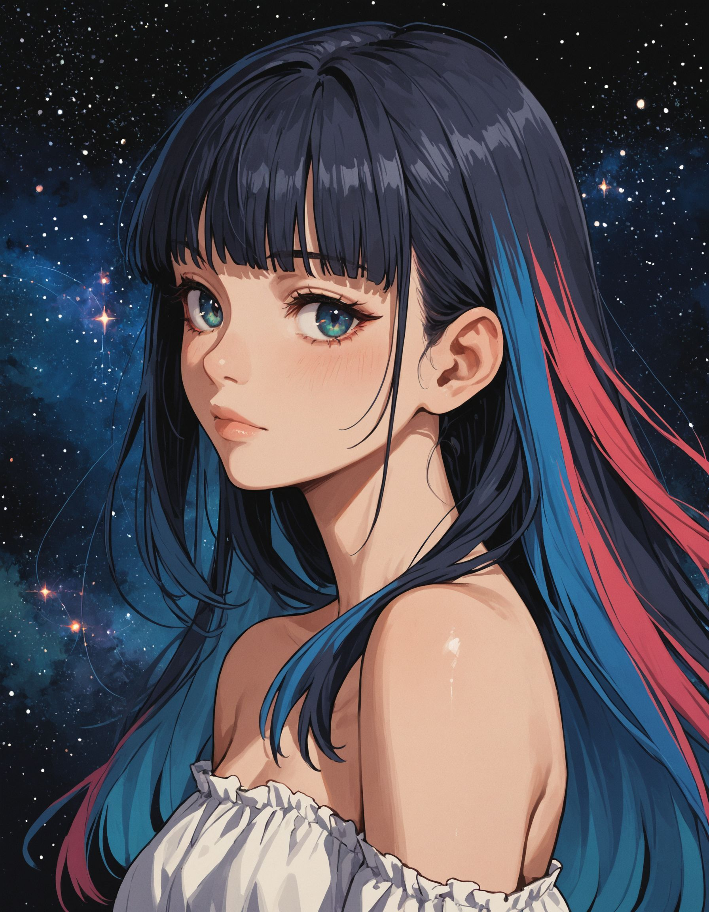
Pony
全般
snowpony_v10
「snowpony_v10」に特化した追加学習モデルです。Stable DiffusionでのAI画像生成にLoRAを導入し、特定要素の再現性を劇的に向上。効率的かつ高品質なビジュアルを求める全てのAI絵師必見のモデルです。
Size: 7,105,350,162 bytes

Pony
全般
Sono Bisque Doll wa Koi wo Suru - Marin Kitagawa XL R2B1
「Sono Bisque Doll wa Koi wo Suru - Marin Kitagawa XL R2B1」に特化した追加学習モデルです。Stable DiffusionでのAI画像生成にLoRAを導入し、特定要素の再現性を劇的に向上。効率的かつ高品質なビジュアルを求める全てのAI絵師必見のモデルです。
Size: 228,447,724 bytes
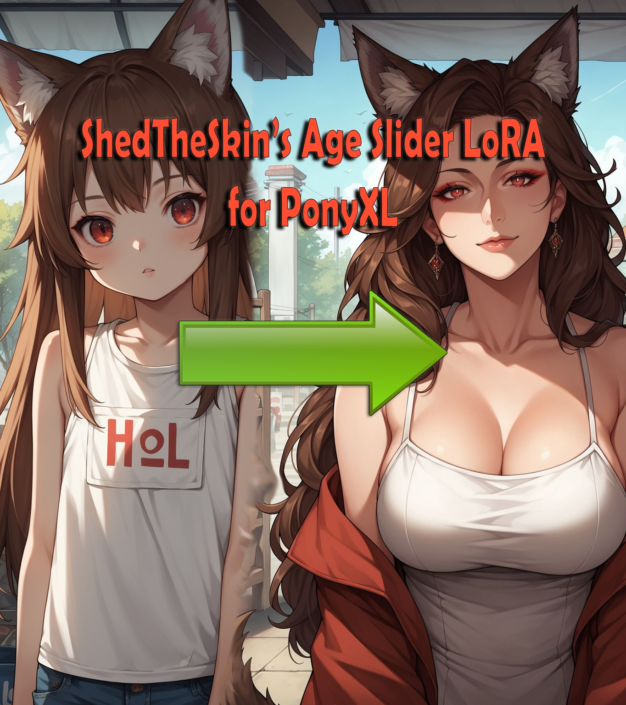
Pony
全般
StS_age_slider_v1_initial_release
「StS_age_slider_v1_initial_release」に特化した追加学習モデルです。Stable DiffusionでのAI画像生成にLoRAを導入し、特定要素の再現性を劇的に向上。効率的かつ高品質なビジュアルを求める全てのAI絵師必見のモデルです。
Size: 43,610,038 bytes
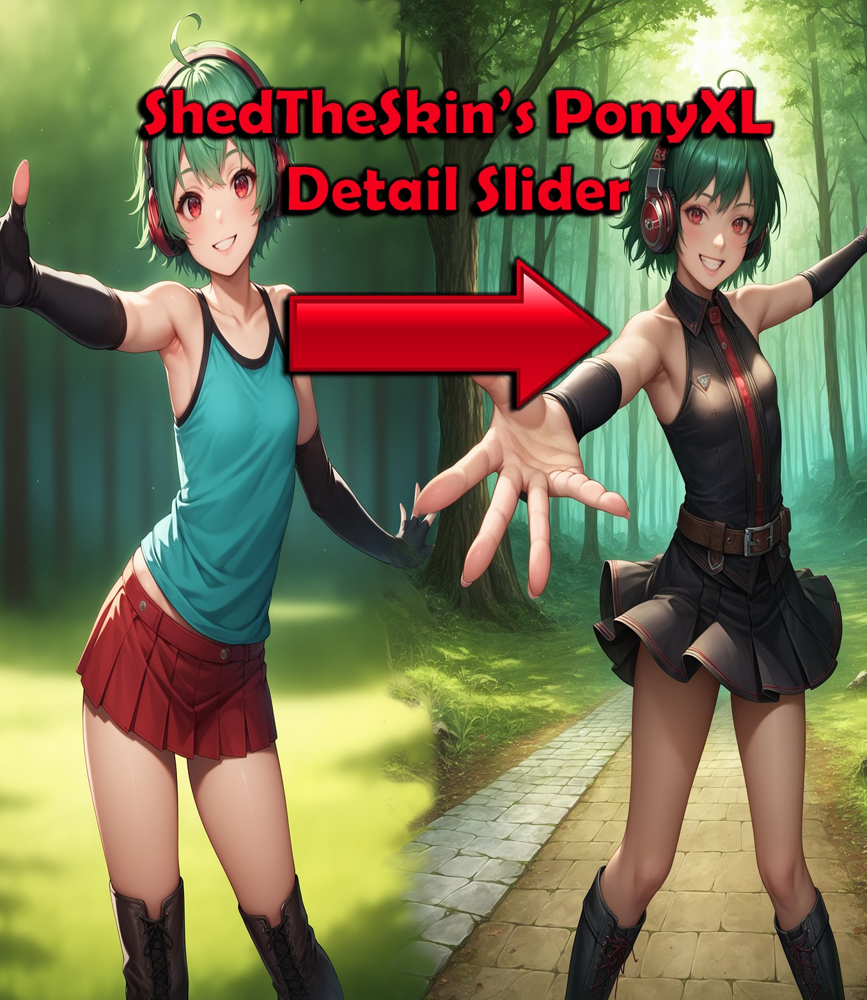
Pony
全般
StS_PonyXL_Detail_Slider_v1.4_iteration_3
「StS_PonyXL_Detail_Slider_v1.4_iteration_3」に特化した追加学習モデルです。Stable DiffusionでのAI画像生成にLoRAを導入し、特定要素の再現性を劇的に向上。効率的かつ高品質なビジュアルを求める全てのAI絵師必見のモデルです。
Size: 17,430,004 bytes
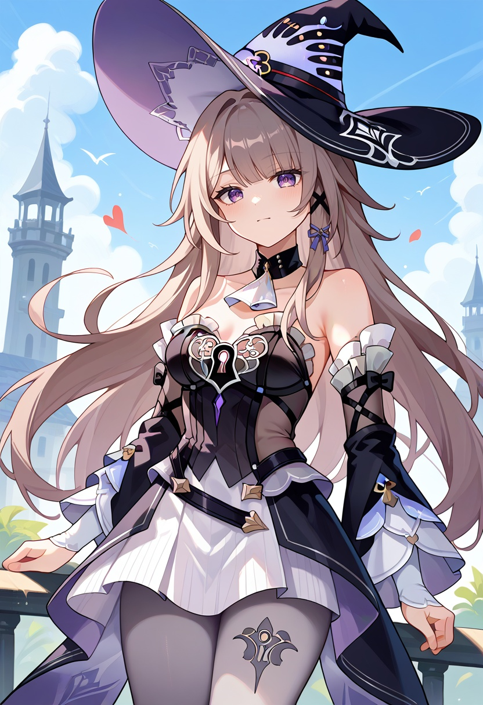
Pony
全般
thehertaponyxl6
「thehertaponyxl6」に特化した追加学習モデルです。Stable DiffusionでのAI画像生成にLoRAを導入し、特定要素の再現性を劇的に向上。効率的かつ高品質なビジュアルを求める全てのAI絵師必見のモデルです。
Size: 57,423,148 bytes
Pony
全般
Theobrobine_StyleXL-06
「Theobrobine_StyleXL-06」に特化した追加学習モデルです。Stable DiffusionでのAI画像生成にLoRAを導入し、特定要素の再現性を劇的に向上。効率的かつ高品質なビジュアルを求める全てのAI絵師必見のモデルです。
Size: 228,463,588 bytes
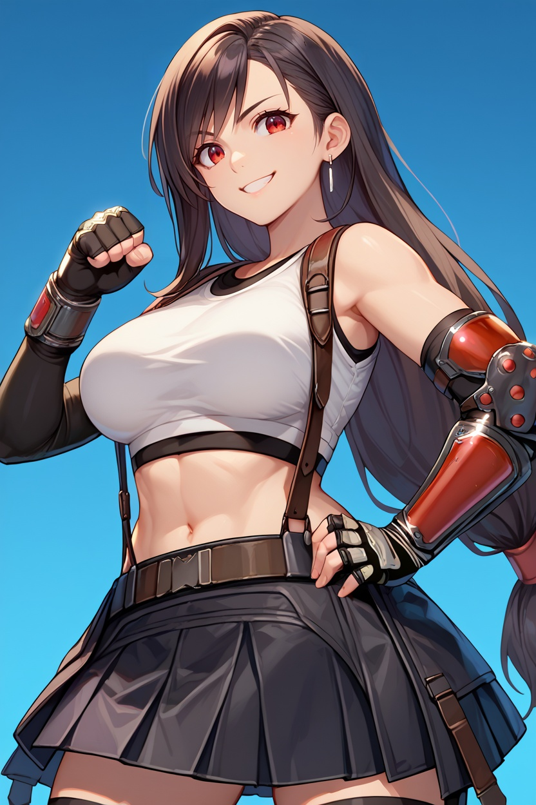
Pony
全般
tifa-pdxl-nvwls-v1
「tifa-pdxl-nvwls-v1」に特化した追加学習モデルです。Stable DiffusionでのAI画像生成にLoRAを導入し、特定要素の再現性を劇的に向上。効率的かつ高品質なビジュアルを求める全てのAI絵師必見のモデルです。
Size: 114,505,868 bytes
Pony
全般
waiREALMIX_v11
「waiREALMIX_v11」に特化した追加学習モデルです。Stable DiffusionでのAI画像生成にLoRAを導入し、特定要素の再現性を劇的に向上。効率的かつ高品質なビジュアルを求める全てのAI絵師必見のモデルです。
Size: 6,938,040,682 bytes
Pony
全般
waiREALMIX_v60
「waiREALMIX_v60」に特化した追加学習モデルです。Stable DiffusionでのAI画像生成にLoRAを導入し、特定要素の再現性を劇的に向上。効率的かつ高品質なビジュアルを求める全てのAI絵師必見のモデルです。
Size: 6,938,040,714 bytes

Pony
全般
Yabuki Kentarou_PONY_v3
「Yabuki Kentarou_PONY_v3」に特化した追加学習モデルです。Stable DiffusionでのAI画像生成にLoRAを導入し、特定要素の再現性を劇的に向上。効率的かつ高品質なビジュアルを求める全てのAI絵師必見のモデルです。
Size: 57,456,372 bytes
Pony
全般
yamazakidaily_storefront_PONY_V1
「yamazakidaily_storefront_PONY_V1」に特化した追加学習モデルです。Stable DiffusionでのAI画像生成にLoRAを導入し、特定要素の再現性を劇的に向上。効率的かつ高品質なビジュアルを求める全てのAI絵師必見のモデルです。
Size: 114,432,308 bytes
Pony
全般
yor-briar-s1-ponyxl-lora-nochekaiser
「yor-briar-s1-ponyxl-lora-nochekaiser」に特化した追加学習モデルです。Stable DiffusionでのAI画像生成にLoRAを導入し、特定要素の再現性を劇的に向上。効率的かつ高品質なビジュアルを求める全てのAI絵師必見のモデルです。
Size: 228,480,068 bytes
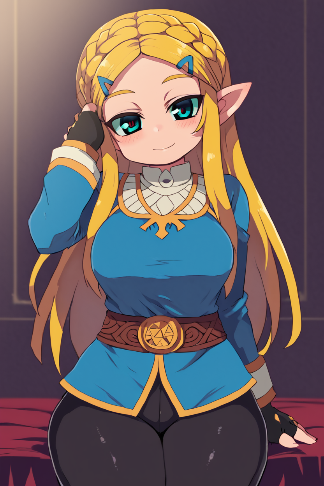
Pony
全般
Zankuro_Style_Pony
「Zankuro_Style_Pony」に特化した追加学習モデルです。Stable DiffusionでのAI画像生成にLoRAを導入し、特定要素の再現性を劇的に向上。効率的かつ高品質なビジュアルを求める全てのAI絵師必見のモデルです。
Size: 228,543,364 bytes